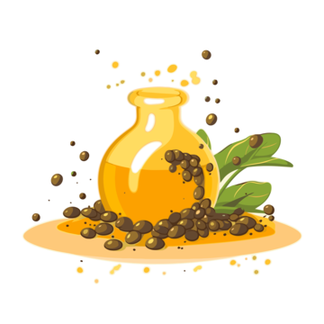

dijon mustard
Dijon mustard is a traditional mustard from France, named after the city of Dijon where it was made. The main ingredients of this condiment are brown mustard seeds and white wine, or a mix of wine vinegar, water and salt. It can be used as an accompaniment to dishes in its usual form as a paste, or it can be mixed with other ingredients to make a sauce. Dijon mustard does not have a protected geographical indication (PGI). 80 percent of seeds used to make the mustard come from Canada.
mustard seeds
Mustard seeds are small round seeds produced by various mustard plants. They come in a variety of colors, ranging from yellow to white to black. They come from one of three different plants: black mustard (Brassica nigra), brown Indian mustard (B. juncea), or white/yellow mustard (B. hirta/Sinapis alba). Grinding and mixing the seeds with water, vinegar or other liquids creates the yellow condiment known as prepared mustard.